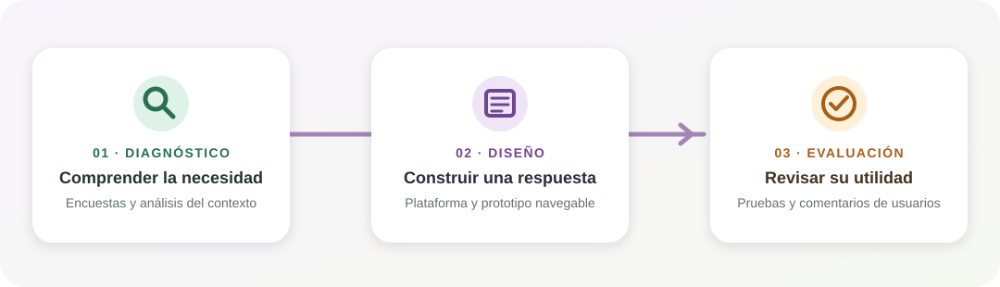

El trabajo avanza en tres pasos relacionados: comprender las necesidades laborales de la comunidad, diseñar una plataforma que responda a ellas y evaluar el prototipo para orientar sus mejoras.

Del diagnóstico a la evaluación: cada objetivo aporta información para el siguiente.
01 · DIAGNÓSTICO
Comprender las necesidades laborales
Investigar las dificultades para encontrar vacantes en los sectores cercanos al Colegio Brasilia Bosa y conocer qué información necesita la comunidad, cómo encuentra ofertas y qué espera de una plataforma local.
Acciones: revisar fuentes, recoger percepciones mediante encuestas y organizar los hallazgos.
Resultado esperado: definir las prioridades y los requisitos que guiarán el diseño.
02 · DISEÑO Y DESARROLLO
Diseñar una plataforma comunitaria
Organizar la publicación y consulta de ofertas con recorridos comprensibles para candidatos y empleadores. La interfaz debe presentar de forma clara la información esencial y adaptarse a distintos dispositivos.
Acciones: estructurar contenidos, diseñar pantallas y construir un prototipo navegable.
Resultado esperado: mostrar cómo la propuesta puede facilitar el acceso y la difusión de vacantes.
03 · EVALUACIÓN
Evaluar funcionalidad y pertinencia
Realizar pruebas, encuestas y simulaciones con participantes para revisar la navegación, la claridad, la eficiencia, la confianza y otros aspectos de la experiencia de uso.
Acciones: observar el uso, recopilar comentarios y analizar los resultados de la evaluación.
Resultado esperado: identificar ajustes y recomendaciones para futuras versiones.